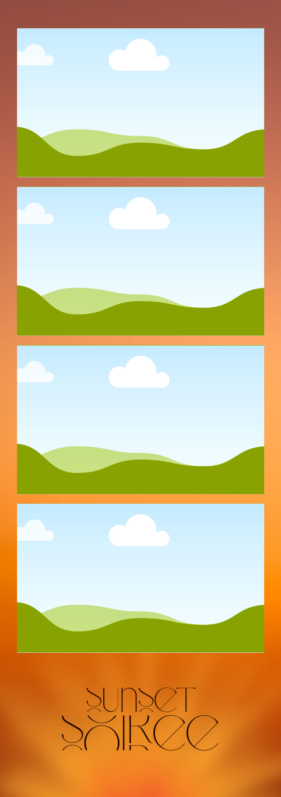
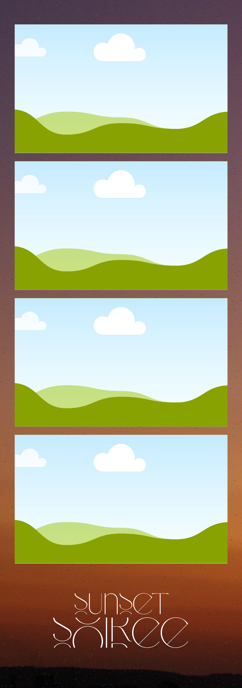
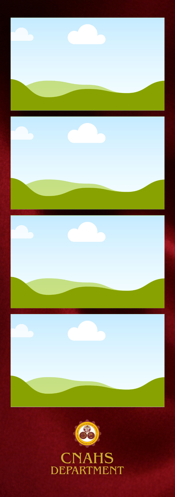
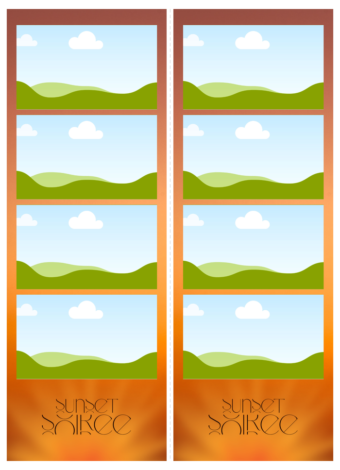

An event-specific photobooth experience designed around the identity, atmosphere, and memories of Sunset Soirée.

“An event can be photographed.
But the moments people actually experience are different.”
Official event photography serves an essential purpose: it documents the stage, the speeches, and the schedule. But a photobooth captures something entirely different — how people experienced the night together.
For the College of Nursing and Allied Health Sciences, Sunset Soirée represents months of shared dedication, late-night studies, clinical rotations, and camaraderie. The unhurried smiles inside the booth become the personal keepsakes students hold onto long after the music fades.
We don't want to place a generic photobooth inside Sunset Soirée. We want the photobooth to feel like it truly belongs there.
A seamless five-step interaction that balances fun spontaneity with flawless technical execution.
Welcoming Mirror Preview
8-Shot Capture Session
Sunset Soirée Artwork Selection
Dual 4R Print & Cloud QR
Physical Keepsake & Digital 60fps BTS Video
We explore distinct design directions tailored for CNAHS. Below are three initial frame concepts created specifically for this proposal.
Radiant warm cream canvas enriched with stylized golden sunburst rays, delicate starburst motifs, and custom art-deco "SUNSET SOIRÉE" typography celebrating CNAHS.

Atmospheric dusk-to-evening gradient shifting into an evocative mountain skyline silhouette, paired with clean white "SUNSET SOIRÉE" title typography.

Regal velvet crimson background bearing the official gold CNAHS emblem seal, CIT-University heritage insignias, and distinguished "CNAHS DEPARTMENT" serif lettering.
From subtle typography to full visual motifs, the frame elements can be tailored to make the prints unmistakably Sunset Soirée.
Exact styling of "Sunset Soirée" in the official event typeface or customized lettering.
Incorporate the college identity, university crest, or student council emblem with clarity.
Calibrated sunset gradient, amber glow, or custom committee hex color palette.
Commemorative date string, graduating batch year, or honorary program designations.
A complete keepsake ecosystem: printed photographs for guest pockets and immediate digital access for social sharing.
High-definition dye-sublimation print quality on lab-grade photo paper. Two identical 2×6 photo strips produced instantly on every take — durable, water-resistant, and made to last.

Each print includes an ISO-standard QR code. Scanning opens a mobile-optimized portal with the full-res photo strip, individual raw takes, and a 60fps BTS timelapse video.
An honest, complete breakdown of what is provided during every single photobooth session.
Ample takes to capture multiple candid poses without feeling rushed.
Guests select their preferred event frame layout on the touchscreen.
Crisp, glossy photo strip prints produced on-site within seconds.
Direct mobile downloads of original full-resolution photo assets.
Fast-forward timelapse video capturing all the behind-the-scenes moments.
“Sunset is a transition.
The day ends. The night begins.
And somewhere in between, memories are made.”
Our goal is to give those moments a place to stay — in a physical print, on a smartphone camera roll, and in the memories of the CNAHS community who celebrated together.
Not empty superlative claims — simply a commitment to thoughtful design, robust technology, and respect for your event.
We would love to make the photobooth experience a small but memorable part of Sunset Soirée. Let us build something meaningful together.
Let's Create Something Made for the Night